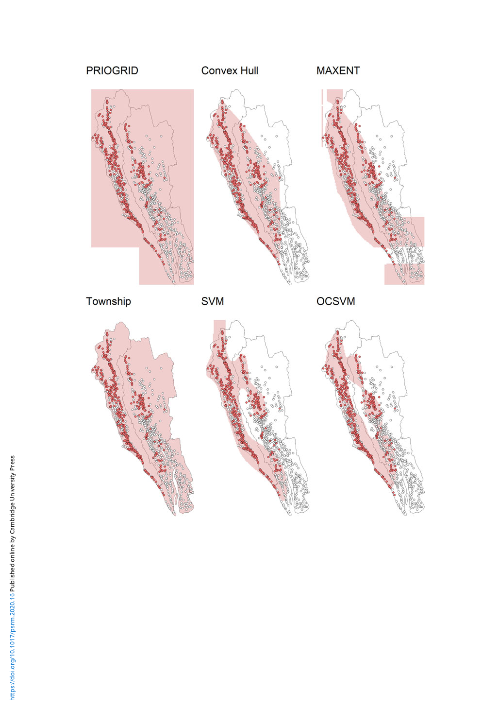

108 Kyosuke Kikuta
Figure 6. Estimated zones of the Rohingya housing destruction.
Note: The figure shows the zones of the Rohingya housing destruction estimated by the six methods. The red points show the villages
that suffered “few housing destruction” or more between 31 August 2017 and 31 March 2018. The white points villages that did not
suffer any housing destruction. Those data are derived from UNITAR (2018). The red areas are the estimated zones.
relatively high performance, it includes the central mountain areas in which there is no housing
destruction or conflict (the upper middle pane of Figure 6). Because there is no observation in the
mountain areas, these mis-predictions are not reflected in the accuracy metric, which creates the
impression that the convex hull would be as accurate as the OCSVM. The OCSVM, on the other
hand, does not include those central mountain areas.
Compared to those statistical methods, the MAXENT exhibits very low accuracy. As seen in
the upper right pane of Figure 6, the MAXENT is unstable outside the extent of the presence